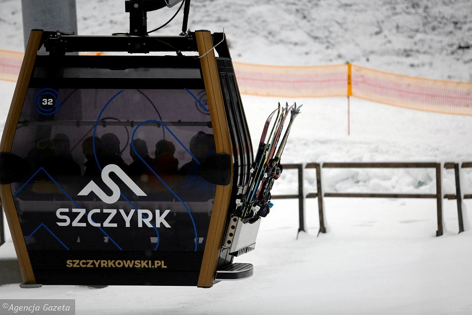
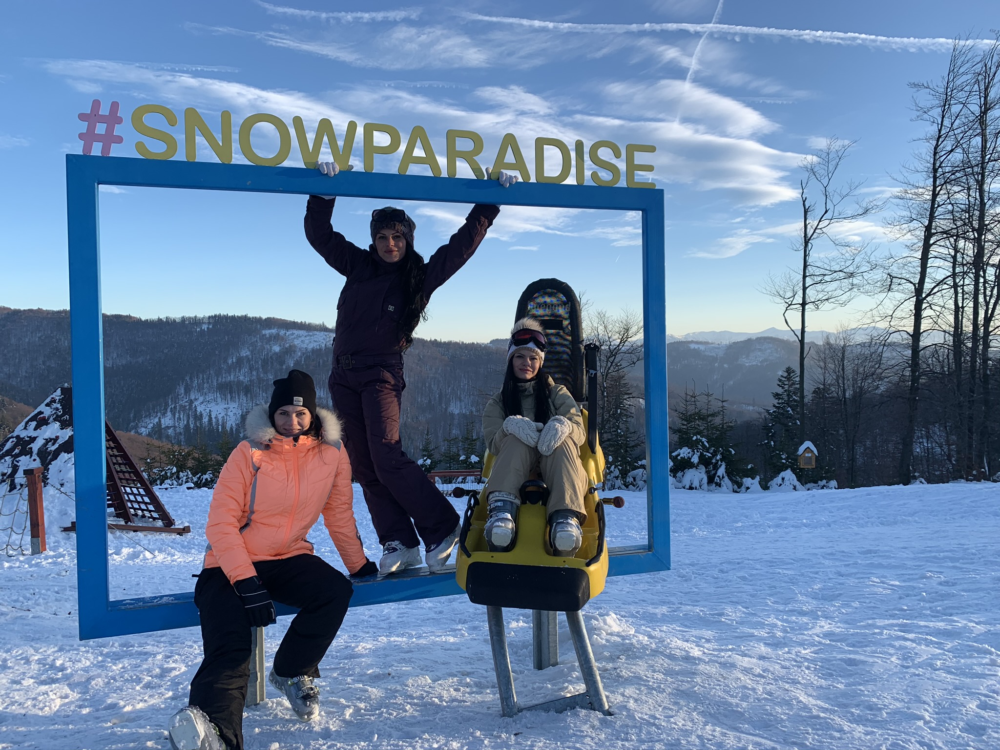
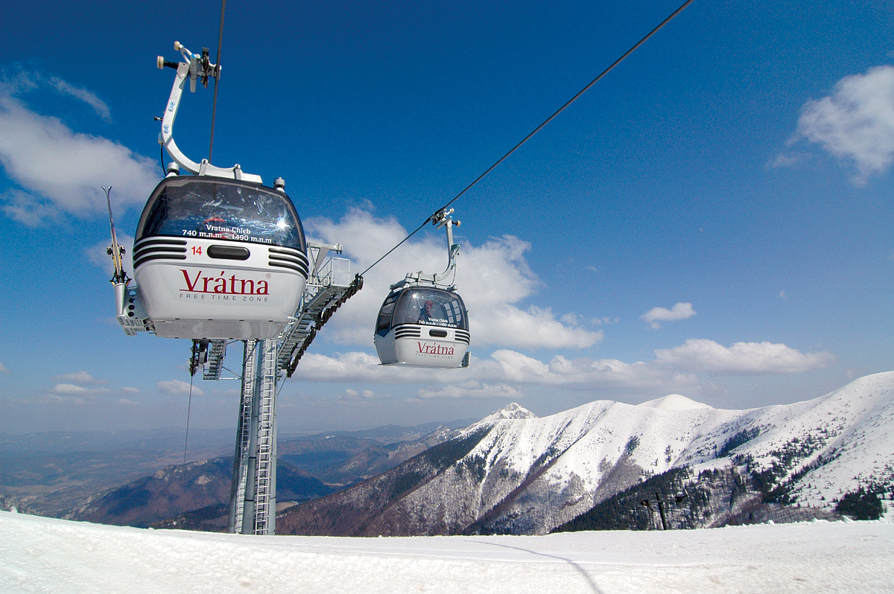

Polsko - Sczyrk mountain resort 2024

Místo: Sczyrk
590 Kč
Největší beskydské středisko s dlouhými a pohodově i sportovně laděnými sjezdovkami, stejně jako cvičnými loukami má podobu lyžařské houpačky, rozkládající se mezi třemi vrcholy Skryczne, Male Skryczne a Wierch Posredni nedaleko polské Wisly.
Skibus - Velká Rača

Místo: Velká Rača
590 Kč
Mezinárodní lyžařské středisko Snowparadise Veľká Rača sa nachází na Kysuciach v obci Oščadnica - pohoří Kysucké Beskydy. Poloha střediska je velmi zajímavá, protože sa nachází v blízkosti hranic s Českou republikou a Polskem.
Slovensko - Vrátná Malá Fatra

Místo: Vrátná
790 Kč
Lyžařské středisko Vrátna je výjimečné svojí polohou v Malé Fatře. V národním parku se nacházejí tři základní lokality, které společně vytvářejí lyžařské středisko - Paseky, Poludňový Grúň a Chleb. Provozují 14 km sjezdovek